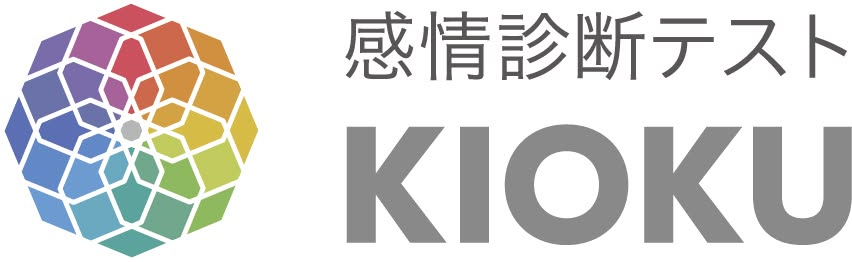

各質問に答えると、今のあなたの主感情がわかります。定期的に受けることで、感情の変化を確認できます。
5段階でお答えください
| まったく当てはまらない |
| あまり当てはまらない |
| どちらとも言えない |
| やや当てはまる |
| とても当てはまる |
一般社団法人アクセスリーディング協会
スコアは今のあなたの状態を映すひとつの目安です
ご自身の気になる時に受けてみましょう。
© 一般社団法人アクセスリーディング協会 無断転載・複製を禁じます。
⏰
感情は変化します。
今の状態を確認するために、もう一度診断してみましょう。